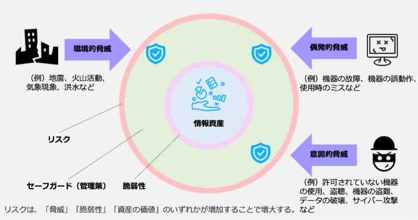

10-1-1. 用語の定義と関係性
企業や組織には様々なセキュリティ上のリスクが存在しています。これらのリスクを効率的に管理するには、リスクマネジメントを行う必要があります。
リスクマネジメントを理解するために必要となる「脅威」、「脆弱性」、「リスク」といった用語の定義や関係性を説明します。次に、リスクを増大させる要因となる「脅威」や「脆弱性」の識別方法を説明します。
主な用語の定義
- 脅威：システム又は組織に損害を与える可能性がある、望ましくないインシデントの潜在的な原因。例えば、不正アクセス、DDoS攻撃のような意図的な人為的脅威、機器の故障や操作ミスのような偶発的な人為的脅威、地震や洪水のような環境的脅威がある。
- 脆弱性：1つ以上の脅威によって付け込まれる可能性のある、資産又は管理策の弱点。例えば、セキュリティホールと呼ばれるソフトウェアの欠陥・不具合。
- 情報資産の重要度：機密性・完全性・可用性が損なわれた場合の事業に対する影響や、法律で安全管理義務があるなどの観点から、情報資産の重要度を判断する。
- セーフガード（管理策）：リスクを修正する対策。具体的には、リスクを除去あるいは許容できる範囲に制御するための手順や仕組みのこと。
- リスク：目的に対する不確かさの影響。情報セキュリティにおいては、脅威が組織に損害を与える可能性。
- リスク値：リスクの大きさのこと。「情報資産の重要度」と「機密性・完全性・可用性を損なう事象の発生確率」の積で求められる。
脅威、脆弱性、情報資産、セーフガード（管理策）、リスクの関係を分かりやすく図で表すと以下のようになります。
図43.脅威、脆弱性、情報資産、セーフガード（管理策）、リスクの関係
（例）業務用ノートパソコン
業務用ノートパソコンに関する脅威や脆弱性、管理策の関係について説明します。
資産
ノートパソコン内の情報
価値
営業の業務で必須の情報
脅威
社外への持ち出しによるノートパソコンの紛失
リスク
盗難による情報漏えい
脆弱性
不適切なパスワードの設定（例）わかりやすいパスワード：名前、社員番号、生年月日など
保護要求事項
- 権限のないものがログインできないようにする
- 不要な持ち出しを防ぐ
管理策
- 複雑なパスワードの設定（8.5 セキュリティを保った認証）
- 社外の持ち出し管理（7.9 構外にある装置及び資産のセキュリティ（構外にある資産））
図44. 脆弱性、リスクの関係の事例
上記の図では「脅威」「脆弱性」「資産の価値」のいずれかが増加することで、リスクが増大することが示されています。リスクを減少させるためには、まず「脅威」、「脆弱性」、「資産の価値」を識別し、リスクに対する保護要求事項を明らかにします。そして、保護要求事項に合致するセーフガード（管理策）を適切に実施することが必要です。